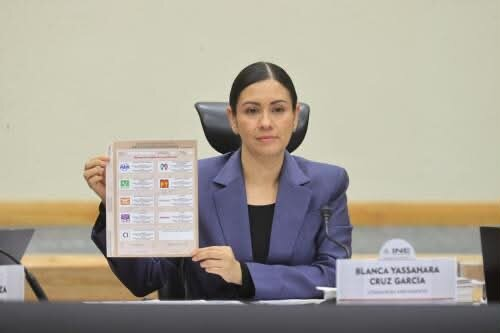
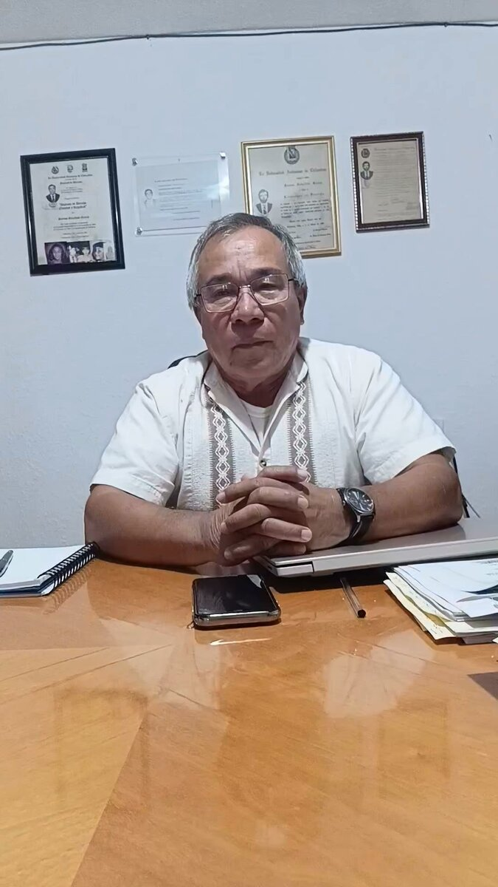
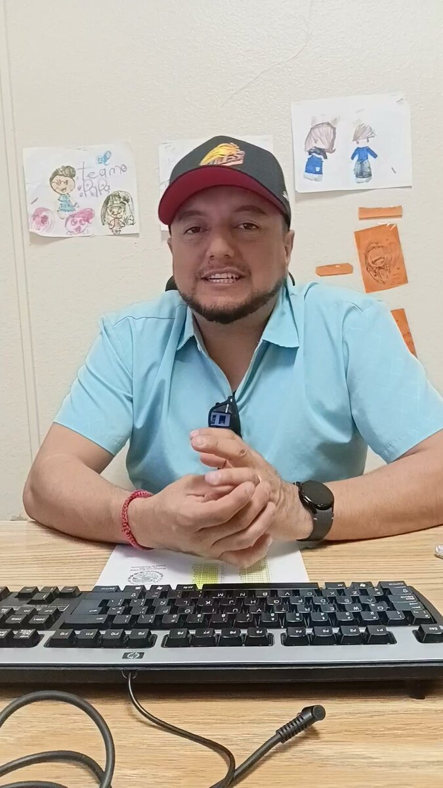
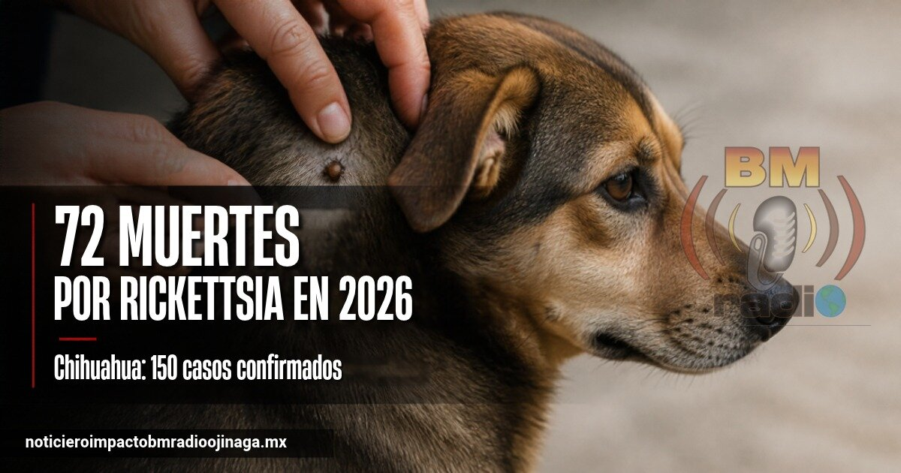

Local
La licenciada Valeria Esquivel Andazola, psicóloga del Instituto Ojinaguense de la Mujer, explicó que los casos que requieren apoyo legal se canalizan a CAVIM. Mira el video completo en Facebook.
Local
El ingeniero Jaime Alejandro Chambers Arias, director de Desarrollo Urbano y Ecología, informó que el 9 de marzo de 2027 es la fecha límite para la titulación de terrenos. Mira el video completo en Facebook.
Local
El licenciado Elam López Olivas, presidente del Comité Municipal del PRI en Ojinaga, habló sobre la campaña de adaptación de lentes, tinacos y boilers solares. Mira el video completo en Facebook.

Policiaca
La Secretaría de Seguridad Pública del Estado (SSPE) ha recuperado durante 2026 un total de 147 vehículos con reporte de robo o alertas de fraude en Estados Unidos, distribuidos en al menos 12 municipios de Chihuahua. Las unidades proceden de 11 estados de la Unión Americana y su valor comercial conjunto podría superar los 170 millones de pesos. Ciudad Juárez encabeza los aseguramientos con 52 vehículos, seguido de Chihuahua capital con 22 y Cuauhtémoc con 19. Ojinaga aparece entre los municipios señalados, con nueve vehículos recuperados, la misma cantidad que Nuevo Casas Grandes. De acuerdo con las autoridades, estos vehículos ingresan ilegalmente a México y algunos presuntamente terminan en manos de grupos criminales, que los utilizan para sus operaciones. La SSPE mantiene operativos de vigilancia y recuperación en distintas regiones del estado para detectar estas unidades y avanzar en las investigaciones.

Frontera
Carmen Elguezabal, directora de la Biblioteca Pública de Presidio, dio un reconocimiento público a la voluntaria Bertha Zubiate, quien creó y montó el altar tradicional de Día de Muertos en la biblioteca.

Estatal
Cruz Pérez Cuéllar, coordinador estatal de la Defensa de la Transformación en Chihuahua, informó que entregó 2.5 toneladas de croquetas a varios refugios de animales del estado. Según dijo, la donación es para apoyar y reconocer el trabajo de los rescatistas.

Nacional
El Banco de México bajó su tasa de interés de 6.50% a 6.25% en una votación dividida de 3 contra 2. Los mercados no esperaban el recorte, y el peso perdió valor frente al dólar. Este cambio puede influir en los créditos, en el ahorro y en el tipo de cambio en la frontera.

Nacional
El Consejo Mexicano de la Carne prevé aumentos para el próximo año: 6% en la carne de res (8 a 15 pesos por kilo), 4.8% en el cerdo (3 a 7 pesos) y 3.3% en el pollo (2 a 5 pesos). Las causas que señala son los costos de energía y producción, la inseguridad en las carreteras y la poca oferta de ganado en Estados Unidos. Además, la exportación de ganado a ese país apenas llega al 2% de lo normal.
Frontera
La Embajada de Estados Unidos en México advirtió que, aunque los demócratas ganaron el Congreso el martes, la política migratoria sigue igual y quien cruce de manera irregular enfrentará consecuencias legales. Por su parte, Donald Trump dijo que, si la nueva gobernadora de Texas no continúa con su política fronteriza, él lo hará.
Frontera
En el Condado de Presidio, Gina Hinojosa recibió el 77% de los votos para gobernadora de Texas y James Talarico el 78% para senador, según resultados no oficiales. Susan Hays ganó la comisaría del Precinto 4 con 459 votos contra 264 de Ida Domínguez, que fue como candidata por escrito. Joe Portillo fue reelecto juez del condado sin oposición.
Estatal
Daniel Terrazas Parada, nuevo fiscal de la Zona Centro, visitó el municipio de Aldama para presentar a parte de su equipo y reunirse con la alcaldesa Sandra Galindo. Hablaron de seguridad, de digitalizar trámites y de coordinarse con las fuerzas federales en la región, que incluye el corredor Aldama-Ojinaga.

Nacional
El Instituto Nacional Electoral (INE) aprobó el diseño e impresión de la boleta para elegir diputaciones federales en 2027, que incorporará los logotipos de los nuevos partidos PAZ y SOMOS. También autorizó otros documentos para las modalidades de Voto Anticipado y de Personas en Prisión Preventiva. El organismo prevé imprimir más de 100 millones de boletas en alrededor de 20 días, con un ritmo estimado de cinco millones diarios. La producción estará a cargo de Talleres Gráficos de México e incluirá medidas de seguridad para evitar falsificaciones. Además, el INE aprobó materiales y mecanismos para facilitar el sufragio de personas con discapacidad visual o motriz, así como de adultos mayores. La reutilización de urnas, mamparas y otros insumos electorales permitirá un ahorro estimado de 806.9 millones de pesos. En cuanto al voto de personas en prisión preventiva, el Consejo General autorizó que puedan participar en las elecciones de 2027 mediante boletas impresas. La votación se realizará del 12 al 16 de mayo en centros penitenciarios de 21 entidades, para quienes permanezcan privados de la libertad sin una sentencia condenatoria firme. Por otra parte, el Instituto designó a 33 mujeres para ocupar Vocalías Ejecutivas en juntas distritales, como parte de una estrategia para fortalecer la participación femenina en puestos directivos. Dos de las plazas serán asignadas a personas con conocimientos de náhuatl.

Local
El C.P. Óscar Valenzuela Rodríguez, Oficial Mayor del Municipio, explicó que no hay impedimento para ser presidente del PAN y Oficial Mayor, y que no recibe sueldo en el PAN. Mira el video completo en Facebook.

Local
El licenciado Renzo Ávila Zepeda, director de la página de Transparencia, informó que se ha recibido una solicitud para un informe de Desarrollo Urbano y Ecología. Mira el video completo en Facebook.
Local
El profesor José Jesús García Ontiveros, síndico municipal de Ojinaga, habló sobre las gestiones sociales que realiza la sindicatura. Mira el video completo en Facebook.
Estatal
César Komaba Quezada renunció el miércoles a la presidencia del Comité Directivo Municipal del PAN en Chihuahua capital, cargo que tenía para el periodo 2025-2028. El comité convocó a una sesión extraordinaria hoy jueves a las 6 de la tarde para conocer la renuncia y proponer a quien ocupe la Secretaría General.

Estatal
En lo que va del año se han confirmado 150 casos de rickettsiosis en el estado, y 72 de ellos terminaron en muerte, informó el subdirector de Epidemiología, Gumaro Barrios Gallegos. En el mismo periodo de 2025 hubo 94 casos y 46 muertes. Ciudad Juárez acumula 82 casos y Chihuahua capital 45. Las autoridades de salud piden revisar a las mascotas para quitarles garrapatas, fumigar los lugares donde se crían y buscar atención médica si hay fiebre, dolor de cabeza intenso o manchas en la piel.
Estatal
La falta de lluvias durante etapas determinantes del ciclo agrícola provocará una fuerte caída en la producción de maíz blanco y amarillo en el estado de Chihuahua, situación que podría afectar el abasto de alimentos y elevar los costos para el sector pecuario. De acuerdo con las estimaciones del sector campesino, la producción de maíz blanco apenas alcanzaría las 20 mil toneladas, frente a una demanda de hasta 50 mil toneladas en la región de la Sierra Tarahumara. En cuanto al maíz amarillo, utilizado principalmente para la alimentación del ganado, se estima que la cosecha no llegará al millón de toneladas. Jesús Emiliano García, dirigente de la Unión Campesina Democrática (UCD), explicó que el retraso y la interrupción de las precipitaciones afectaron tanto a los cultivos de temporal como a los de riego. Señaló que incluso las tierras de riego necesitan de la humedad que aportan las lluvias para alcanzar un desarrollo adecuado y mejores rendimientos. La reducción de la cosecha representa un nuevo desafío para los productores agrícolas, para las comunidades serranas que dependen del maíz blanco para su alimentación y para los ganaderos que requieren maíz amarillo como insumo.
Nacional
Este jueves 5 de noviembre entra en vigor la Ley de Economía Digital para Pagos Digitales y Electrónicos, que amplía el uso de medios de pago electrónicos y faculta a la Secretaría de Hacienda y Crédito Público para determinar en qué sectores económicos podrían dejar de aceptarse pagos en efectivo. Hacienda tiene 15 días hábiles para definir los sectores y actividades en los que el pago digital podría ser el único permitido; gasolineras y casetas podrían estar en la lista. Después tendrá otros 15 días hábiles para emitir las disposiciones administrativas. Cuando falle el internet o los sistemas electrónicos, se podrá pagar en efectivo o con cheque. El Banco de México participará con herramientas para facilitar las transferencias, la interoperabilidad de aplicaciones financieras y el uso de códigos QR. La ley no prohíbe el efectivo en todo el país: la restricción dependerá de los sectores que determine Hacienda y de las disposiciones que se emitan después.